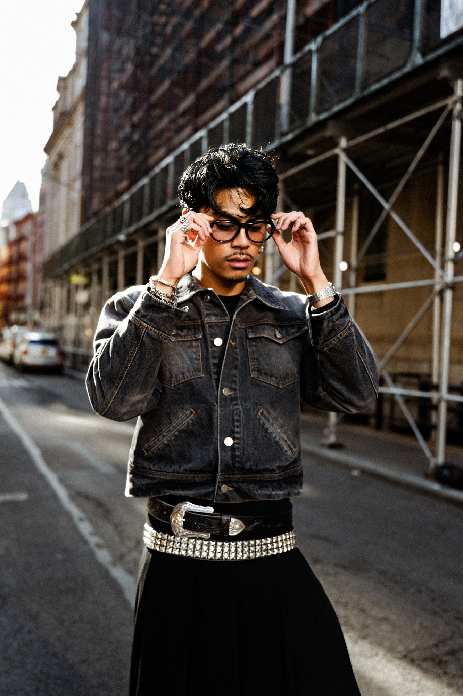
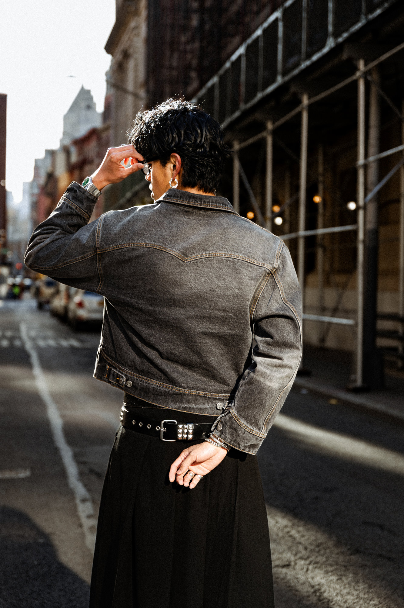
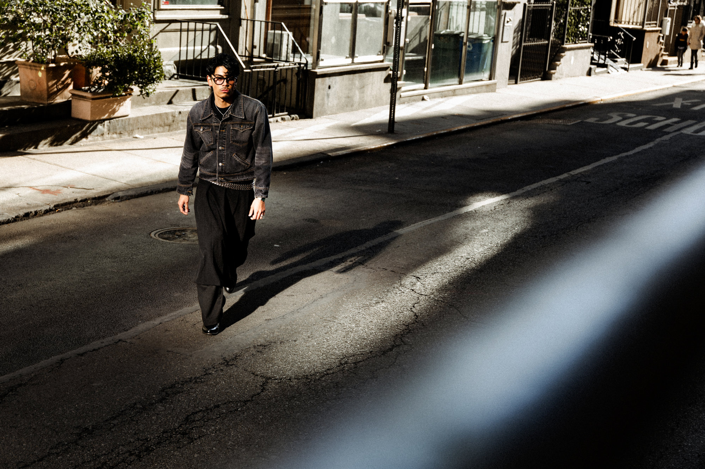
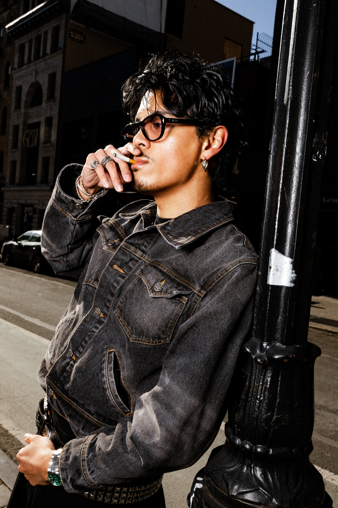
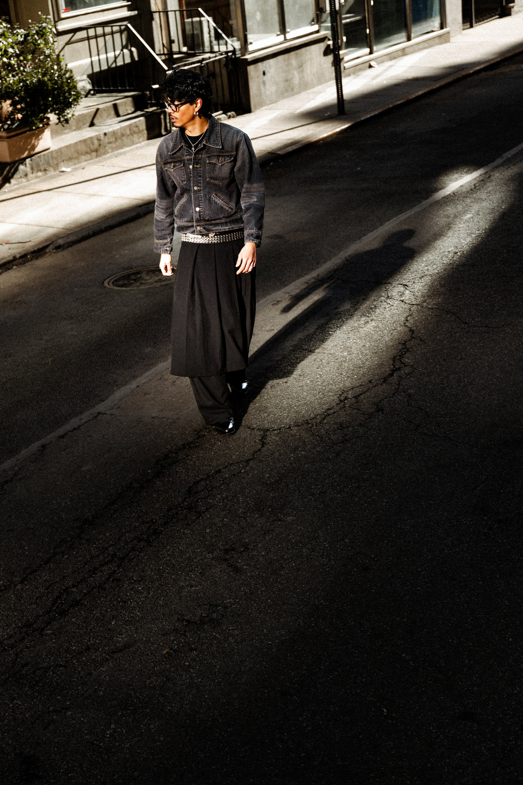
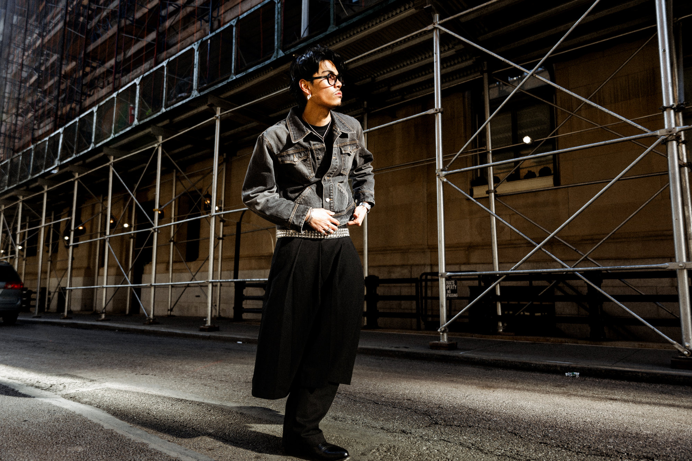
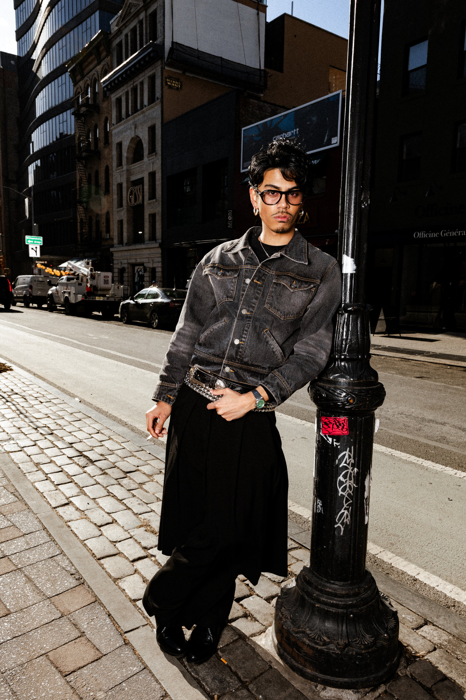

Idol
Shot on the streets of New York City, IDOL is a campaign for Lodi Studios — a fashion brand founded and modeled by Xavier Mendoza. The project leaned entirely on natural light, using reflections off city windows at sunset to create dynamic, flash-like imagery without the need for artificial lighting. Only one frame used flash — the rest came from chasing golden-hour light and letting the city do the work.
I photographed Xavier on a freezing 40-degree day, carrying far more gear than I needed — lights, cameras, even a laptop — none of which made it out of the bag. But despite the cold and the weight, we created something clean, cinematic, and deeply aligned with Xavier’s vision for Lodi Studios.
Credits:
Photography – Peter Sanjur
Model / Brand Owner – Xavier Mendoza
Brand – Lodi Studios
Location – New York City







